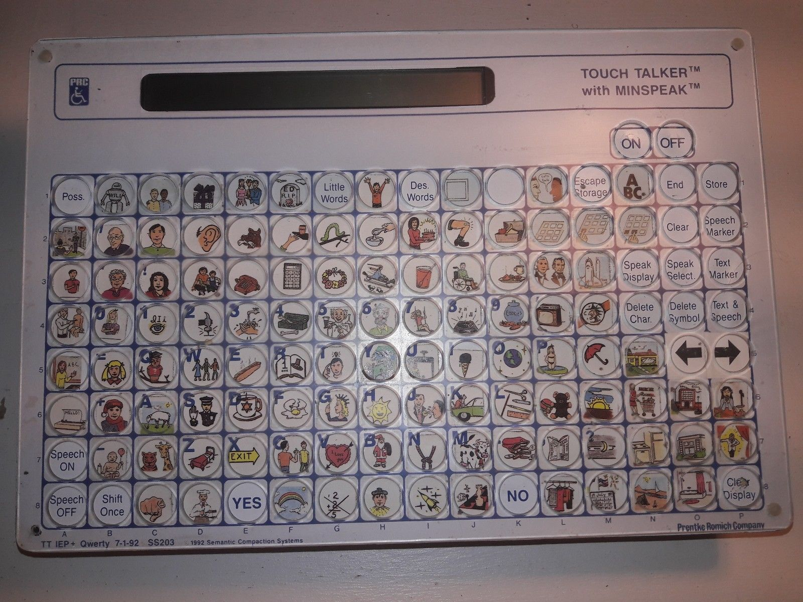

The reading had a heavy emphasis on the sense of community and its power. As I read about Lateef McLeod’s struggles in Gaining Power through Communication Access, I got curiously intrigued in this Touch Talker device and one Google search later boy was I not disappointed.

I was expecting a slightly modified keyboard but still, the clutter, overlapping letters and icons, the, ......, everything is beyond my imagination.
From my somehow above average knowledge on keyboards, I believe the overall layout that the keys aren’t staggered is called ortholinear and is preferred by some touch typers since it requires less finger movement and is more efficient. However I’m not sure why it’s implemented here as it is quite different from the usual keyboard layout and might have implications with the users’ adapting to those.
Although I might not be in a position to say this, but still, with McLeod presenting the Touch Talker as a example of a bad AAC device, I couldn’t help but wonder if the person(s) who designed this monstrosity had consulted any person with these communication needs and even regular keyboard users. With this in mind, along with Alice Wong’s words that “[device like this] ... is usually not only, ..., very expensive but it’s often very ugly and not the easiest to use,” I had to wonder if there is a way for these devices to be sexy as we have come accustomed to with the usual consumer electronic devices. Would having disabled people being the designers help? I think yes but the usual tools, be it digital or physical, all seem woefully unoptimized in terms of accessibility even more than regular/consumer items and services, and that might be one of the many barriers for people with disabilities to design devices by themselves and for themselves.